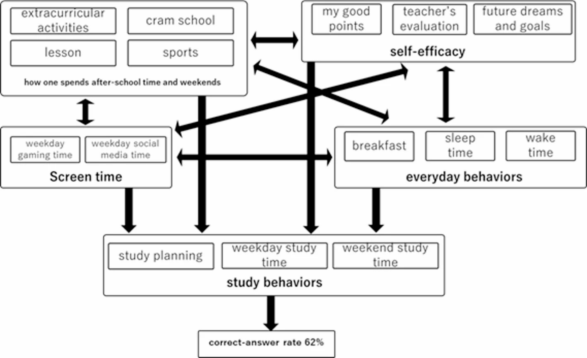
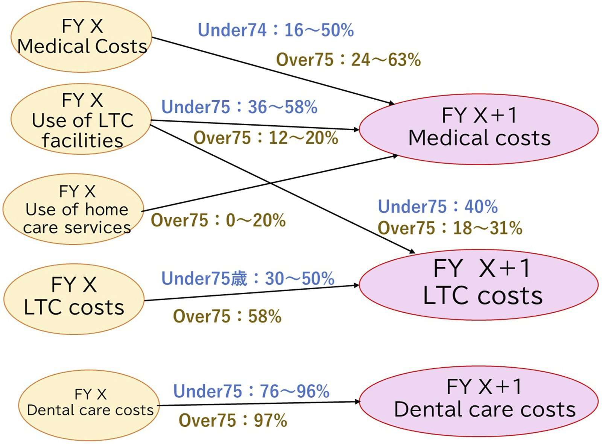

研究者一覧 ／ 鈴木 哲平
SEEDS / 01
産学連携・地域協働データ・テクノロジー
健康・教育・政策の
データ駆動型高度化に関する研究

PROFESSOR ｜ 教授
鈴木 哲平
博士（保健科学）／ MBA（経営管理修士）
岩見沢校
芸術・スポーツビジネス専攻
芸術・スポーツビジネス専攻
自治体の健康診断・医療・介護などのビッグデータを対象に、機械学習や因果推論を用いて医療費や健康行動の予測・要因分析を行うとともに、生活習慣や社会的要因との関係構造を可視化し、エビデンスに基づく政策立案（EBPM）に貢献する研究を展開しています。
また、教育分野においては、学習行動や日常生活と学力の関係をデータ分析により解明し、探究型学習や創造性教育の効果検証を通じて、学びの質の向上や教育の高度化にも取り組んでいます。


健康行動・生活習慣・学習データの分析が可能です
機械学習や因果推論を用いて要因を明らかにします
効果的な健康づくり施策や学力向上に貢献できます
ヘルスケア・教育分野のサービス開発に活用できます
データに基づく新たな価値創出や事業展開につなげられます
自治体の健診・医療費データや教育データを、機械学習・因果推論を用いて分析し、健康づくり施策や学力向上施策の効果検証・改善提案を行うことができます。例えば、高齢者の運動習慣と翌年度医療費の関係分析では、医療費削減効果の高い対象者群を特定しました。自治体・企業と連携し、データに基づく施策立案やサービス開発、人材育成に貢献できます。
共同研究・受託研究・データ分析のご相談を承っています。